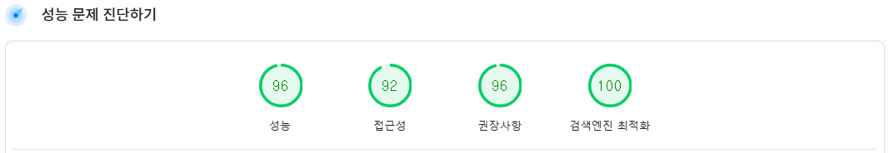

박준용
Fullstack Developer
Skills
Frontend
- HTML | CSS | JavaScript (ES6)
- React.js
-
 Next.js
Next.js
-
 Jquery
Jquery
- Bootstrap
Backend
-
Node.js |
 Express.js
Express.js
-
PHP |
 CodeIgniter
CodeIgniter
- Python
Database
-
MySQL |
 MongoDB |
MongoDB |
 MariaDB
MariaDB
DevOps
-
Linux |
 AWS EC2
AWS EC2
CMS
- WordPress
소개
풀스택 개발자 박준용 입니다.
개발 경험 2년 주니어 개발자로, Node.js와 Express를 중심으로 한 웹 서비스 개발 경험을 보유하고 있습니다. React와 Next.js를 활용한 모던 프론트엔드 구현뿐만 아니라, Electron과 PySide를 활용한 데스크탑 GUI 애플리케이션 개발 경험도 있습니다. 또한 WordPress 기반 웹사이트 제작과 MySQL, MongoDB, MariaDB를 활용한 데이터 관리 역량을 갖추고 있어 기획부터 배포까지 프로젝트 전 과정을 수행할 수 있습니다. 문제 해결과 빠른 학습 능력을 바탕으로 팀 협업과 성과 창출에 강점을 가지며, 새로운 기술 도입과 최적화에도 적극적으로 참여합니다.
개인정보
프로젝트
LMS 온라인강의 사이트
- WordPress 기반 LMS 플랫폼
- 수강생 진도 추적, 결제시스템, 구매자 전용 프로그램 접근 검증 구현
- MySQL/MariaDB로 수강 기록·결제 정보 관리
- 사용자 친화적 UI/UX 제공
- 캐싱 처리로 PageSpeedInsights 성능 및 SEO 최적화 (Performance 48% 개선: 65 → 96, LCP 49% 단축: 3.5s → 1.8s, CLS 99% 개선: 0.18 → 0.001) 
URL Shortener 원페이지 웹사이트
- 10,000건 이상의 URL 데이터 관리 및 단축 기능
- URL 클릭수 추적으로 트래픽 분석
- 악성 사용자 필터링 및 차단 , IP 추적 구현
넥슨 API 캐릭터 검색 웹사이트
- 넥슨 API 연동 실시간 캐릭터 검색
- 총 150,000건 이상의 캐릭터 조회 기록 관리
- PHP + CodeIgniter 기반, REST API + AJAX 활용
경력
| 회사 | 근무기간 | 직무 | 주요업무 |
|---|---|---|---|
| 뉴그린테크 | 2023.09 ~ 2024.07 | 생산팀 |
|
| 메타게이지 코퍼레이션 | 2024.08 ~ 2024.10 (퇴사사유 : 경영악화) | 백엔드개발팀 |
|
학력
- 성운대학교 스마트평생융합학과 졸업